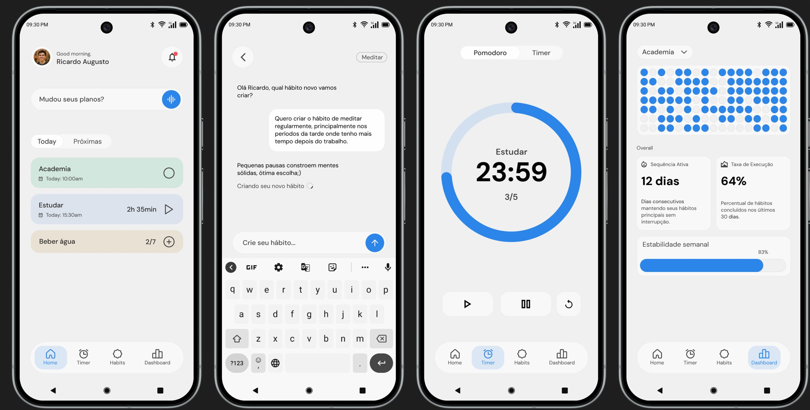
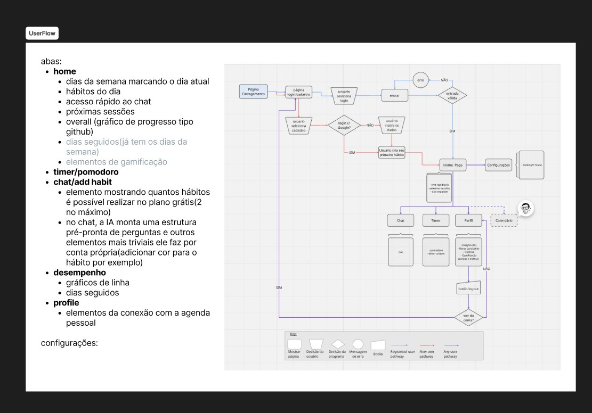
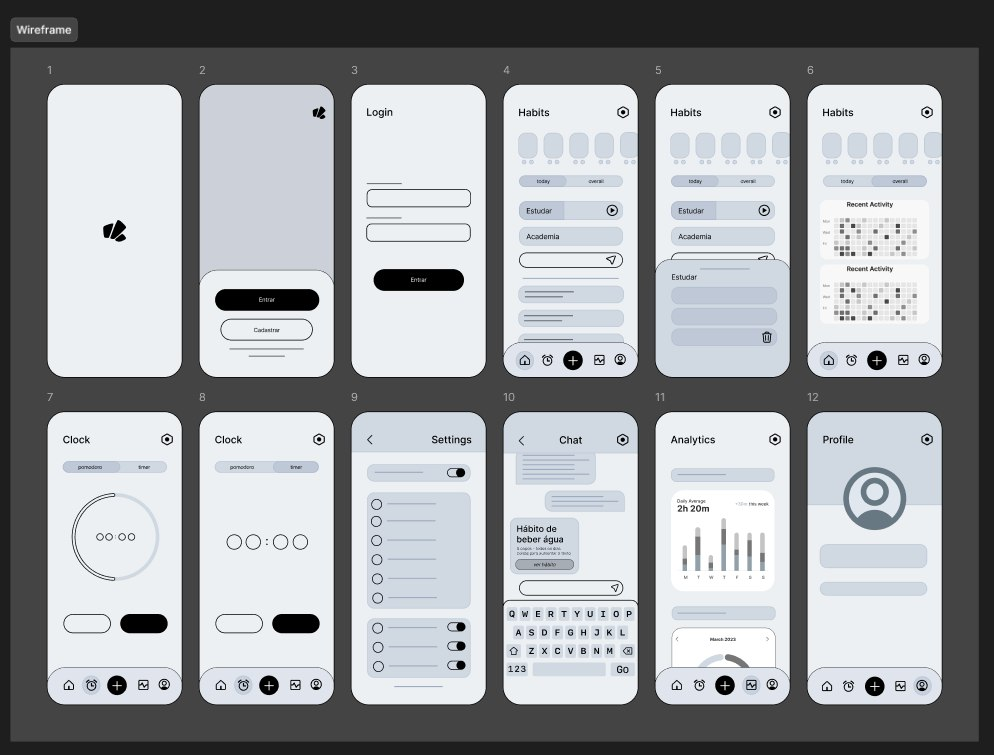
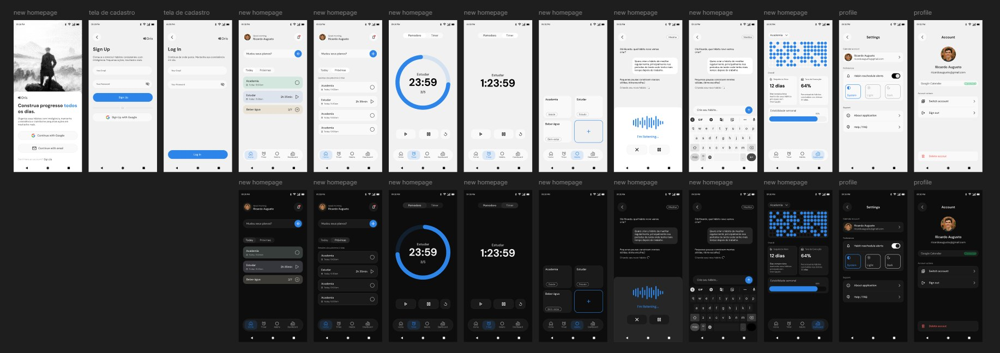
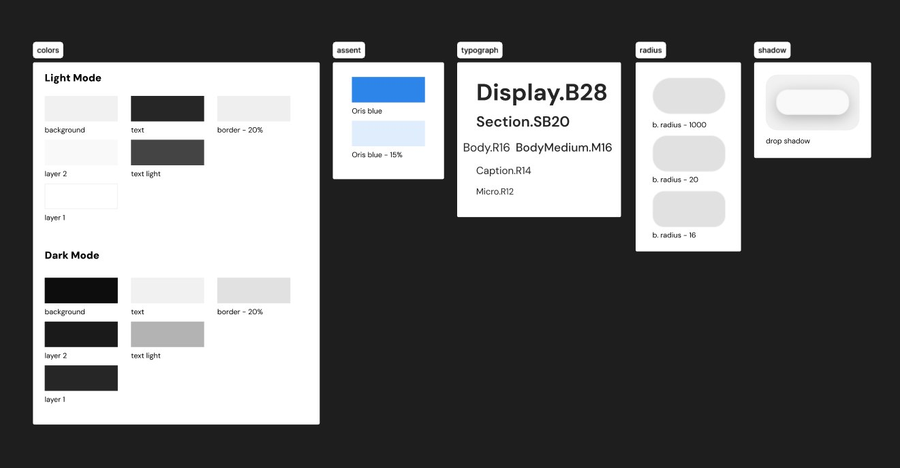
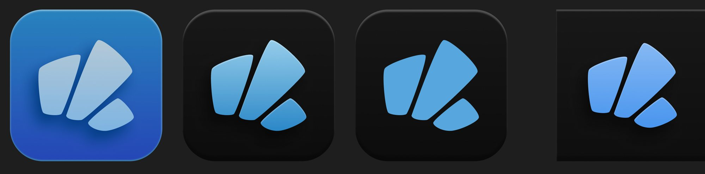

Oris
Planejador de hábitos que conecta à agenda, encaixa cada hábito no tempo livre e ajusta o plano quando o dia muda.
- Papel
- Proposta de valor, experiência, interface e marca
- Tipo
- App mobile · TCC com dois colegas
- Ano
- 2025–2026

O plano quebra quando o dia muda.
Apps de hábito costumam tratar a semana como se ela fosse sempre igual. Surge uma reunião nova, o horário do hábito some, a sequência quebra e o que sobra é culpa.
O usuário cuida do hábito. O Oris cuida do resto.
O Oris conecta à agenda, encontra o melhor horário para cada hábito e reorganiza o plano sozinho quando algo muda. Criar um hábito é uma conversa, não um formulário, e sessão perdida vira recuperação, não bronca.
Do fluxo à tela final.
O caminho inteiro do projeto: o fluxo, os wireframes, a interface e o sistema que mantém tudo consistente.
O fluxo antes das telas.
Antes de desenhar qualquer tela, mapeei o caminho inteiro: cadastro e login, criação do primeiro hábito, as cinco abas (início, timer, chat, desempenho e perfil) e a integração com o Google Calendar. O chat é o atalho: a IA monta o hábito e só pergunta o que falta.

Estrutura primeiro, acabamento depois.
Doze telas em baixa fidelidade: login e cadastro, início com hábitos e atividades, timer, configurações, chat criando um hábito, desempenho e perfil.

O app inteiro, desenhado à mão.
A primeira versão foi toda desenhada no Figma: do cadastro às configurações, em tema claro e escuro. Depois, cada tela foi refinada até a versão final.

Um sistema para claro e escuro.
Cores e estados definidos para os dois temas, com o azul do Oris como acento; escala tipográfica (Display, Section, Body, Caption e Micro), raios de 16 a 1000 e uma sombra única de elevação.

Peças que se encaixam.
Três formas que se apoiam, como hábitos encaixados numa semana real.


“Mudou o plano? Ele se adapta.”
Vídeo de apresentação animado no Jitter e editado à mão.
Quem fez o quê.
O projeto mais feito à mão do portfólio. A IA entrou no fim, para levar o que foi desenhado para o código.
- À mãoProposta de valor, experiência, marca, ícone, todas as telas da v1 no Figma, posts e o vídeo (Jitter + edição).
- Com IAA interface em código da versão final, a partir do que foi desenhado.